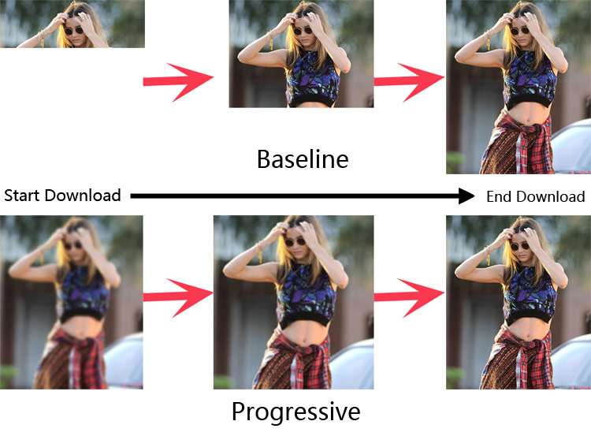

<!DOCTYPE html>
<html lang="en">
<head><meta name="generator" content="Hexo 3.8.0">
    <meta charset="utf-8">
    
    <title>渐进式 JPEG 格式 | winsky&#39;s Wiki</title>
    
    
        <meta name="keywords" content="图像格式">
    
    <meta name="viewport" content="width=device-width, initial-scale=1, maximum-scale=1">
    <meta name="description" content="JPEG 图像文件有两种保存方式，分别是 Baseline JPEG（基本式）和Progressive JPEG（渐进式），两种方式保存时有相同的尺寸、后缀名和图像数据，区别是两种格式文件在加载时的显示方式不同。 Baseline JPEGBaseline（基本式）格式保存的 JPEG 文件是通过一次按从上到下的扫描，顺序式编码（Sequential Encoding）保存数据的，加载这个文件时，">
<meta name="keywords" content="图像格式">
<meta property="og:type" content="article">
<meta property="og:title" content="渐进式 JPEG 格式">
<meta property="og:url" content="https://wiki.winsky.wang/计算机基础知识/图形图像/渐进式-JPEG-格式/index.html">
<meta property="og:site_name" content="winsky&#39;s Wiki">
<meta property="og:description" content="JPEG 图像文件有两种保存方式，分别是 Baseline JPEG（基本式）和Progressive JPEG（渐进式），两种方式保存时有相同的尺寸、后缀名和图像数据，区别是两种格式文件在加载时的显示方式不同。 Baseline JPEGBaseline（基本式）格式保存的 JPEG 文件是通过一次按从上到下的扫描，顺序式编码（Sequential Encoding）保存数据的，加载这个文件时，">
<meta property="og:locale" content="en">
<meta property="og:image" content="https://wiki.winsky.wang/计算机基础知识/图形图像/渐进式-JPEG-格式/baseline.gif">
<meta property="og:image" content="https://wiki.winsky.wang/计算机基础知识/图形图像/渐进式-JPEG-格式/progressive.gif">
<meta property="og:image" content="https://wiki.winsky.wang/计算机基础知识/图形图像/渐进式-JPEG-格式/基本型与渐进式效果对比.jpg">
<meta property="og:updated_time" content="2019-03-17T11:10:39.000Z">
<meta name="twitter:card" content="summary">
<meta name="twitter:title" content="渐进式 JPEG 格式">
<meta name="twitter:description" content="JPEG 图像文件有两种保存方式，分别是 Baseline JPEG（基本式）和Progressive JPEG（渐进式），两种方式保存时有相同的尺寸、后缀名和图像数据，区别是两种格式文件在加载时的显示方式不同。 Baseline JPEGBaseline（基本式）格式保存的 JPEG 文件是通过一次按从上到下的扫描，顺序式编码（Sequential Encoding）保存数据的，加载这个文件时，">
<meta name="twitter:image" content="https://wiki.winsky.wang/计算机基础知识/图形图像/渐进式-JPEG-格式/baseline.gif">
    

    
        <link rel="alternate" href="/atom.xml" title="winsky&#39;s Wiki" type="application/atom+xml">
    

    
        <link rel="icon" href="/favicon.ico">
    

    <link rel="stylesheet" href="/libs/font-awesome/css/font-awesome.min.css">
    <link rel="stylesheet" href="/libs/open-sans/styles.css">
    <link rel="stylesheet" href="/libs/source-code-pro/styles.css">

    <link rel="stylesheet" href="/css/style.css">
    <script src="/libs/jquery/2.1.3/jquery.min.js"></script>
    <script src="/libs/jquery/plugins/cookie/1.4.1/jquery.cookie.js"></script>
    
    
        <link rel="stylesheet" href="/libs/lightgallery/css/lightgallery.min.css">
    
    
        <link rel="stylesheet" href="/libs/justified-gallery/justifiedGallery.min.css">
    
    
    
    


    
        <script async src="//dn-lbstatics.qbox.me/busuanzi/2.3/busuanzi.pure.mini.js"></script>
    
</head>
</html>
<body>
    <div id="container">
        <header id="header">
    <div id="header-main" class="header-inner">
        <div class="outer">
            <a href="/" id="logo">
                <i class="logo"></i>
                <span class="site-title">winsky&#39;s Wiki</span>
            </a>
            <nav id="main-nav">
                
                    <a class="main-nav-link" href="/">首页</a>
                
                    <a class="main-nav-link" href="/archives">归档</a>
                
                    <a class="main-nav-link" href="/categories">分类</a>
                
                    <a class="main-nav-link" href="/tags">标签</a>
                
                    <a class="main-nav-link" href="/about">关于</a>
                
            </nav>
            
            <div id="search-form-wrap">

    <form class="search-form">
        <input type="text" class="ins-search-input search-form-input" placeholder="Search">
        <button type="submit" class="search-form-submit"></button>
    </form>
    <div class="ins-search">
    <div class="ins-search-mask"></div>
    <div class="ins-search-container">
        <div class="ins-input-wrapper">
            <input type="text" class="ins-search-input" placeholder="Type something...">
            <span class="ins-close ins-selectable"><i class="fa fa-times-circle"></i></span>
        </div>
        <div class="ins-section-wrapper">
            <div class="ins-section-container"></div>
        </div>
    </div>
</div>
<script>
(function (window) {
    var INSIGHT_CONFIG = {
        TRANSLATION: {
            POSTS: 'Posts',
            PAGES: 'Pages',
            CATEGORIES: 'Categories',
            TAGS: 'Tags',
            UNTITLED: '(Untitled)',
        },
        ROOT_URL: '/',
        CONTENT_URL: '/content.json',
    };
    window.INSIGHT_CONFIG = INSIGHT_CONFIG;
})(window);
</script>
<script src="/js/insight.js"></script>

</div>
        </div>
    </div>
    <div id="main-nav-mobile" class="header-sub header-inner">
        <table class="menu outer">
            <tr>
                
                    <td><a class="main-nav-link" href="/">首页</a></td>
                
                    <td><a class="main-nav-link" href="/archives">归档</a></td>
                
                    <td><a class="main-nav-link" href="/categories">分类</a></td>
                
                    <td><a class="main-nav-link" href="/tags">标签</a></td>
                
                    <td><a class="main-nav-link" href="/about">关于</a></td>
                
                <td>
                    
    <div class="search-form">
        <input type="text" class="ins-search-input search-form-input" placeholder="Search">
    </div>

                </td>
            </tr>
        </table>
    </div>
</header>

        <div class="outer">
            
            
                <aside id="sidebar">
   
        
    <div class="widget-wrap" id="categories">
        <h3 class="widget-title">
            <span>categories</span>
            &nbsp;
            <a id="allExpand" href="#">
                <i class="fa fa-angle-double-down fa-2x"></i>
            </a>
        </h3>
        
        
        
         <ul class="unstyled" id="tree"> 
                    <li class="directory">
                        <a href="#" data-role="directory">
                            <i class="fa fa-folder"></i>
                            &nbsp;
                            技术开发
                        </a>
                         <ul class="unstyled" id="tree"> 
                    <li class="directory">
                        <a href="#" data-role="directory">
                            <i class="fa fa-folder"></i>
                            &nbsp;
                            Git
                        </a>
                         <ul class="unstyled" id="tree">  <li class="file"><a href="/技术开发/Git/Git-commit-message-基本规范/">Git commit message 基本规范</a></li>  <li class="file"><a href="/技术开发/Git/Git-清理已追踪或未添加追踪的文件/">Git 清理已追踪或未添加追踪的文件</a></li>  <li class="file"><a href="/技术开发/Git/修改Github项目的语言分类/">修改Github项目的语言分类</a></li>  <li class="file"><a href="/技术开发/Git/彻底清除Github上某个文件的历史/">彻底清除Github上某个文件的历史</a></li>  </ul> 
                    </li> 
                    
                    <li class="directory">
                        <a href="#" data-role="directory">
                            <i class="fa fa-folder"></i>
                            &nbsp;
                            Linux
                        </a>
                         <ul class="unstyled" id="tree"> 
                    <li class="directory">
                        <a href="#" data-role="directory">
                            <i class="fa fa-folder"></i>
                            &nbsp;
                            Shell
                        </a>
                         <ul class="unstyled" id="tree">  <li class="file"><a href="/技术开发/Linux/Shell/awk-管道操作小结/">awk 管道操作小结</a></li>  </ul> 
                    </li> 
                    
                    <li class="directory">
                        <a href="#" data-role="directory">
                            <i class="fa fa-folder"></i>
                            &nbsp;
                            Ubuntu
                        </a>
                         <ul class="unstyled" id="tree">  <li class="file"><a href="/技术开发/Linux/Ubuntu/Ubuntu-16-开机默认命令行界面/">Ubuntu 16.04 开机默认命令行界面</a></li>  </ul> 
                    </li> 
                    
                    <li class="directory">
                        <a href="#" data-role="directory">
                            <i class="fa fa-folder"></i>
                            &nbsp;
                            Vim
                        </a>
                         <ul class="unstyled" id="tree">  <li class="file"><a href="/技术开发/Linux/Vim/Vim-粘贴模式/">Vim 粘贴模式</a></li>  </ul> 
                    </li> 
                     <li class="file"><a href="/技术开发/Linux/Linux-命令控制屏幕/">Linux 命令控制屏幕</a></li>  </ul> 
                    </li> 
                    
                    <li class="directory">
                        <a href="#" data-role="directory">
                            <i class="fa fa-folder"></i>
                            &nbsp;
                            前端
                        </a>
                         <ul class="unstyled" id="tree">  <li class="file"><a href="/技术开发/前端/Selenium-中使用-Chrome-路径问题/">Selenium 中使用 Chrome 路径问题</a></li>  <li class="file"><a href="/技术开发/前端/Webpack-中-css-import-使用-alias-相对路径/">Webpack 中 css import 使用 alias 相对路径</a></li>  <li class="file"><a href="/技术开发/前端/gulp-imagemin-使用与参数设置/">gulp-imagemin 使用与参数设置</a></li>  </ul> 
                    </li> 
                    
                    <li class="directory">
                        <a href="#" data-role="directory">
                            <i class="fa fa-folder"></i>
                            &nbsp;
                            架构
                        </a>
                         <ul class="unstyled" id="tree">  <li class="file"><a href="/技术开发/架构/IaaS-PaaS-SaaS-概念/">IaaS, PaaS, SaaS 概念</a></li>  </ul> 
                    </li> 
                    
                    <li class="directory">
                        <a href="#" data-role="directory">
                            <i class="fa fa-folder"></i>
                            &nbsp;
                            算法
                        </a>
                         <ul class="unstyled" id="tree">  <li class="file"><a href="/技术开发/算法/八大排序算法复杂度/">八大排序算法复杂度</a></li>  </ul> 
                    </li> 
                    
                    <li class="directory">
                        <a href="#" data-role="directory">
                            <i class="fa fa-folder"></i>
                            &nbsp;
                            软件工程
                        </a>
                         <ul class="unstyled" id="tree">  <li class="file"><a href="/技术开发/软件工程/GitHub团队任务管理流程/">GitHub 团队任务管理流程</a></li>  <li class="file"><a href="/技术开发/软件工程/语义化版本号-2-0-0/">语义化版本号 2.0.0</a></li>  </ul> 
                    </li> 
                     </ul> 
                    </li> 
                    
                    <li class="directory">
                        <a href="#" data-role="directory">
                            <i class="fa fa-folder"></i>
                            &nbsp;
                            数据库
                        </a>
                         <ul class="unstyled" id="tree">  <li class="file"><a href="/数据库/mysql安装与配置/">MySQL安全与配置</a></li>  </ul> 
                    </li> 
                    
                    <li class="directory">
                        <a href="#" data-role="directory">
                            <i class="fa fa-folder"></i>
                            &nbsp;
                            程序语言
                        </a>
                         <ul class="unstyled" id="tree"> 
                    <li class="directory">
                        <a href="#" data-role="directory">
                            <i class="fa fa-folder"></i>
                            &nbsp;
                            CSS
                        </a>
                         <ul class="unstyled" id="tree">  <li class="file"><a href="/程序语言/CSS/CSS 属性声明顺序规范/">CSS 属性声明顺序规范</a></li>  </ul> 
                    </li> 
                    
                    <li class="directory">
                        <a href="#" data-role="directory">
                            <i class="fa fa-folder"></i>
                            &nbsp;
                            Java
                        </a>
                         <ul class="unstyled" id="tree">  <li class="file"><a href="/程序语言/Java/Java-访问控制符/">Java 访问控制符</a></li>  </ul> 
                    </li> 
                     </ul> 
                    </li> 
                    
                    <li class="directory open">
                        <a href="#" data-role="directory">
                            <i class="fa fa-folder-open"></i>
                            &nbsp;
                            计算机基础知识
                        </a>
                         <ul class="unstyled" id="tree"> 
                    <li class="directory open">
                        <a href="#" data-role="directory">
                            <i class="fa fa-folder-open"></i>
                            &nbsp;
                            图形图像
                        </a>
                         <ul class="unstyled" id="tree">  <li class="file"><a href="/计算机基础知识/图形图像/曲线调整工具/">曲线调整工具与直方图</a></li>  <li class="file active"><a href="/计算机基础知识/图形图像/渐进式-JPEG-格式/">渐进式 JPEG 格式</a></li>  </ul> 
                    </li> 
                     <li class="file"><a href="/计算机基础知识/Windows系统入门操作导图/">Windows 系统入门操作导图</a></li>  <li class="file"><a href="/计算机基础知识/字符集与字符编码/">字符集与字符编码</a></li>  </ul> 
                    </li> 
                     <li class="file"><a href="/index/">Welcome winsky's Wiki Site</a></li>  </ul> 
    </div>
    <script>
        $(document).ready(function() {
            var iconFolderOpenClass  = 'fa-folder-open';
            var iconFolderCloseClass = 'fa-folder';
            var iconAllExpandClass = 'fa-angle-double-down';
            var iconAllPackClass = 'fa-angle-double-up';
            // Handle directory-tree expansion:
            // 左键单独展开目录
            $(document).on('click', '#categories a[data-role="directory"]', function (event) {
                event.preventDefault();

                var icon = $(this).children('.fa');
                var expanded = icon.hasClass(iconFolderOpenClass);
                var subtree = $(this).siblings('ul');
                icon.removeClass(iconFolderOpenClass).removeClass(iconFolderCloseClass);
                if (expanded) {
                    if (typeof subtree != 'undefined') {
                        subtree.slideUp({ duration: 100 });
                    }
                    icon.addClass(iconFolderCloseClass);
                } else {
                    if (typeof subtree != 'undefined') {
                        subtree.slideDown({ duration: 100 });
                    }
                    icon.addClass(iconFolderOpenClass);
                }
            });
            // 右键展开下属所有目录
            $('#categories a[data-role="directory"]').bind("contextmenu", function(event){
                event.preventDefault();
                
                var icon = $(this).children('.fa');
                var expanded = icon.hasClass(iconFolderOpenClass);
                var listNode = $(this).siblings('ul');
                var subtrees = $.merge(listNode.find('li ul'), listNode);
                var icons = $.merge(listNode.find('.fa'), icon);
                icons.removeClass(iconFolderOpenClass).removeClass(iconFolderCloseClass);
                if(expanded) {
                    subtrees.slideUp({ duration: 100 });
                    icons.addClass(iconFolderCloseClass);
                } else {
                    subtrees.slideDown({ duration: 100 });
                    icons.addClass(iconFolderOpenClass);
                }
            })
            // 展开关闭所有目录按钮
            $(document).on('click', '#allExpand', function (event) {
                event.preventDefault();
                
                var icon = $(this).children('.fa');
                var expanded = icon.hasClass(iconAllExpandClass);
                icon.removeClass(iconAllExpandClass).removeClass(iconAllPackClass);
                if(expanded) {
                    $('#sidebar .fa.fa-folder').removeClass('fa-folder').addClass('fa-folder-open')
                    $('#categories li ul').slideDown({ duration: 100 });
                    icon.addClass(iconAllPackClass);
                } else {
                    $('#sidebar .fa.fa-folder-open').removeClass('fa-folder-open').addClass('fa-folder')
                    $('#categories li ul').slideUp({ duration: 100 });
                    icon.addClass(iconAllExpandClass);
                }
            });  
        });
    </script>

    
    <div id="toTop" class="fa fa-angle-up"></div>
</aside>
            
            <section id="main"><article id="post-计算机基础知识/图形图像/渐进式-JPEG-格式" class="article article-type-post" itemscope itemprop="blogPost">
    <div class="article-inner">
        
        
            <header class="article-header">
                
                    <div class="article-meta">
                        
    <div class="article-category">
    	<i class="fa fa-folder"></i>
        <a class="article-category-link" href="/categories/计算机基础知识/">计算机基础知识</a><i class="fa fa-angle-right"></i><a class="article-category-link" href="/categories/计算机基础知识/图形图像/">图形图像</a>
    </div>

                        
    <div class="article-tag">
        <i class="fa fa-tag"></i>
        <a class="tag-link" href="/tags/图像格式/">图像格式</a>
    </div>

                        
    <div class="article-date">
        <i class="fa fa-calendar"></i>
        <a href="/计算机基础知识/图形图像/渐进式-JPEG-格式/">
            <time datetime="2017-02-01T15:02:02.000Z" itemprop="datePublished">2017-02-01</time>
        </a>
    </div>


                        
                            <i class="fa fa-bar-chart"></i>
                            <span id="busuanzi_container_site_pv"><span id="busuanzi_value_page_pv"></span></span>    
                        
                        
                            <div class="article-meta-button">
                                <a href="https://github.com/winsky94/HexoWiki/raw/dev/source/_posts/计算机基础知识/图形图像/渐进式-JPEG-格式.md" rel="external nofollow noopener noreferrer" target="_blank"> Source </a>
                            </div>
                            <div class="article-meta-button">
                                <a href="https://github.com/winsky94/HexoWiki/edit/dev/source/_posts/计算机基础知识/图形图像/渐进式-JPEG-格式.md" rel="external nofollow noopener noreferrer" target="_blank"> Edit </a>
                            </div>
                            <div class="article-meta-button">
                                <a href="https://github.com/winsky94/HexoWiki/commits/dev/source/_posts/计算机基础知识/图形图像/渐进式-JPEG-格式.md" rel="external nofollow noopener noreferrer" target="_blank"> History </a>
                            </div>
                        
                    </div>
                
                
    
        <h1 class="article-title" itemprop="name">
            渐进式 JPEG 格式
        </h1>
    

            </header>
        
        
        <div class="article-entry" itemprop="articleBody">
        
        
            
        
        
            <p>JPEG 图像文件有两种保存方式，分别是 Baseline JPEG（基本式）和Progressive JPEG（渐进式），两种方式保存时有相同的尺寸、后缀名和图像数据，区别是两种格式文件在加载时的显示方式不同。</p>
<h3 id="Baseline-JPEG"><a href="#Baseline-JPEG" class="headerlink" title="Baseline JPEG"></a><strong>Baseline JPEG</strong></h3><p>Baseline（基本式）格式保存的 JPEG 文件是通过一次按从上到下的扫描，顺序式编码（Sequential Encoding）保存数据的，加载这个文件时，数据将按照存储的顺序从上一行一行往下显示出来，正如其名字一样，是线性加载显示，直到加载完所有数据。</p>
<p></p>
<h3 id="Progressive-JPEG"><a href="#Progressive-JPEG" class="headerlink" title="Progressive JPEG"></a><strong>Progressive JPEG</strong></h3><p>Progressive （渐进式）格式保存的 JPEG 文件包含多次扫描，采用递增式编码（Progressive Encoding）来存储数据，每次扫描整个图片并在上次基础上产生一次图像数据。图片在加载时，依次读取数据，先模糊的显示整个图片，随着读到的扫描次数增加，图片不断变得清晰，直到完显示所有数据。</p>
<p></p>
<h3 id="对比"><a href="#对比" class="headerlink" title="对比"></a>对比</h3><p>上面张效果图都是在网速慢时浏览器上常出现的明显情况，一般来说网站上应该使用 <strong>渐进式 JPEG</strong>， 因为通常我们认为渐进式比起基本式来说，可以让用户在刚开始下载图片时就看到整个图片的大致轮廓和内容，而不必一直干等着加载，并且比起基本型未加载完时的空白，渐进式在未加载完时，依旧有草图的显示，在心理上会直观的感觉这个网站加载更快一点。</p>
<p></p>
<p>两个格式对于同一个图像来说，没有明显的大小和性能差异，图片质量也是一模一样，只是通常来说，同一个图像 <strong>渐进式保存比基本式保存的文件大小更小一点，在保存和显示时，渐进式消耗的 CPU 资源更多一点</strong>。</p>
<p>在 Photoshop 中，“文件”菜单下可选择“Save for Web”（汉化版为：存储为 Web 格式），JPEG 格式下可勾选“Progressive”（汉化版为：连续），然后保存就是<strong>渐进式</strong>的 JPEG。（顺便一提，PNG 格式下汉化叫“交错”）</p>
<h2 id="参考资料"><a href="#参考资料" class="headerlink" title="参考资料"></a>参考资料</h2><blockquote>
<ul>
<li><a href="https://www.biaodianfu.com/progressive-jpeg.html" rel="external nofollow noopener noreferrer" target="_blank">使用渐进式JPEG来提升用户体验</a></li>
<li><a href="http://www.zhangxinxu.com/wordpress/2013/01/progressive-jpeg-image-and-so-on/" rel="external nofollow noopener noreferrer" target="_blank">渐进式jpeg(progressive jpeg)图片及其相关</a></li>
<li><a href="https://calendar.perfplanet.com/2012/progressive-jpegs-a-new-best-practice/" rel="external nofollow noopener noreferrer" target="_blank">Progressive jpegs: a new best practice</a></li>
</ul>
</blockquote>

            </div>
        
        <footer class="article-footer">
        </footer>
    </div>
</article>


    
<nav id="article-nav">
    
        <a href="/技术开发/前端/gulp-imagemin-使用与参数设置/" id="article-nav-newer" class="article-nav-link-wrap">
            <strong class="article-nav-caption">Newer</strong>
            <div class="article-nav-title">
                
                    gulp-imagemin 使用与参数设置
                
            </div>
        </a>
    
    
        <a href="/技术开发/Linux/Vim/Vim-粘贴模式/" id="article-nav-older" class="article-nav-link-wrap">
            <strong class="article-nav-caption">Older</strong>
            <div class="article-nav-title">Vim 粘贴模式</div>
        </a>
    
</nav>


    
    


<!-- baidu url auto push script -->
<script type="text/javascript">
    !function(){var e=/([http|https]:\/\/[a-zA-Z0-9\_\.]+\.baidu\.com)/gi,r=window.location.href,o=document.referrer;if(!e.test(r)){var n="//api.share.baidu.com/s.gif";o?(n+="?r="+encodeURIComponent(document.referrer),r&&(n+="&l="+r)):r&&(n+="?l="+r);var t=new Image;t.src=n}}(window);
</script>     
</section>
        </div>
        <!--
<footer id="footer">
    <div class="outer">
        <div id="footer-info" class="inner">
            winsky &copy; 2019 
            <a rel="license" href="http://creativecommons.org/licenses/by-nc-nd/4.0/"></a>
            <br> Powered by <a href="http://hexo.io/" target="_blank">Hexo</a>. Theme - <a href="https://github.com/zthxxx/hexo-theme-Wikitten">wikitten</a>
            
                <br><span id="busuanzi_container_site_pv"><i class="fa fa-eye"></i><span id="busuanzi_value_site_pv"></span></span> | 
                <span id="busuanzi_container_site_pv"><i class="fa fa-user"><span id="busuanzi_value_site_uv"></span></span>
            
        </div>
    </div>
</footer>
-->
        

    
        <script src="/libs/lightgallery/js/lightgallery.min.js"></script>
        <script src="/libs/lightgallery/js/lg-thumbnail.min.js"></script>
        <script src="/libs/lightgallery/js/lg-pager.min.js"></script>
        <script src="/libs/lightgallery/js/lg-autoplay.min.js"></script>
        <script src="/libs/lightgallery/js/lg-fullscreen.min.js"></script>
        <script src="/libs/lightgallery/js/lg-zoom.min.js"></script>
        <script src="/libs/lightgallery/js/lg-hash.min.js"></script>
        <script src="/libs/lightgallery/js/lg-share.min.js"></script>
        <script src="/libs/lightgallery/js/lg-video.min.js"></script>
    
    
        <script src="/libs/justified-gallery/jquery.justifiedGallery.min.js"></script>
    
    
        <script type="text/x-mathjax-config">
    MathJax.Hub.Config({
        tex2jax: {
            inlineMath: [ ["$","$"], ["\\(","\\)"] ],
            skipTags: ['script', 'noscript', 'style', 'textarea', 'pre', 'code'],
            processEscapes: true,
            TeX: {
                equationNumbers: {
                  autoNumber: 'AMS'
                }
            }
        }
    });
    MathJax.Hub.Queue(function() {
        var all = MathJax.Hub.getAllJax();
        for (var i = 0; i < all.length; ++i)
            all[i].SourceElement().parentNode.className += ' has-jax';
    });
</script>
<script async src="//cdnjs.cloudflare.com/ajax/libs/mathjax/2.7.1/MathJax.js?config=TeX-AMS-MML_HTMLorMML"></script>
    


<!-- Custom Scripts -->
<script src="/js/main.js"></script>

    </div>
</body>
